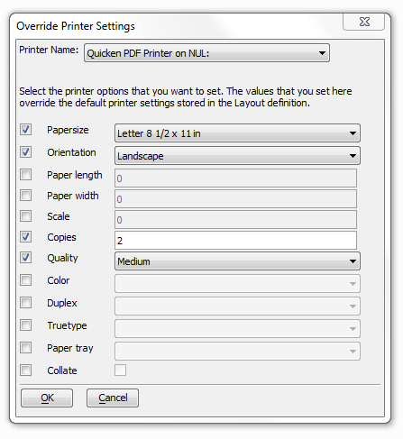

Override Printer Settings Dialog Box
Use the Override Printer Settings dialog box to set the configuration of a printer. To get to the Override Settings dialog open the Code Editor by first opening a workspace and then going to View > Code Editor. From the Code Editor navigate to the Select Action dialog box by doing Right Click > Genies > XBasic Script Genie. Within the Select Action dialog select Reports (Print, Preview, Send, etc.) in the left hand Category list. From the Actions listed on the right select Print a Layout and press OK. The Print a Layout Script Genie will open, select the Options tab and then check the Override Printer Settings? checkbox. Click on the Set Printer Override Settings Button and the Override Printer Settings dialog should open.
Check at the left if you want to set an option, then select or enter a value in the text/list box at right.
Click OK to proceed or Cancel to discard your changes.
